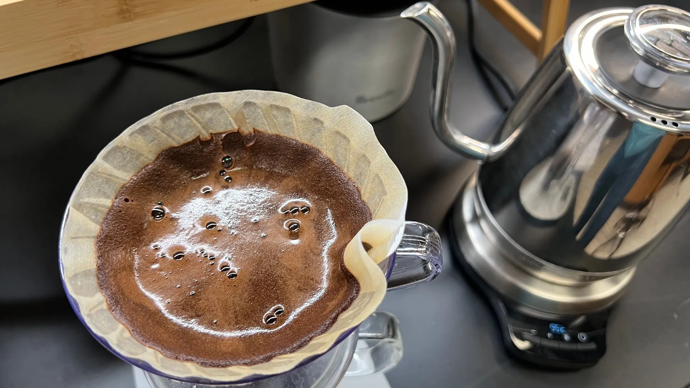
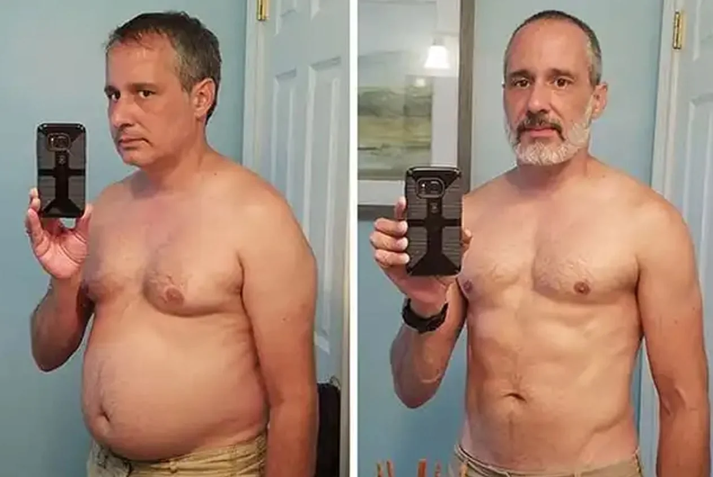
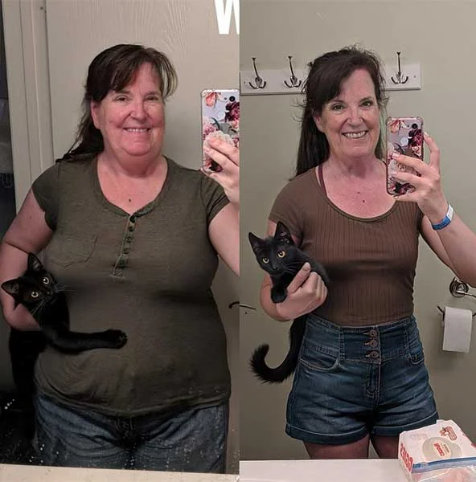

Kardiologe: „Ich habe erlebt, wie Patienten hartnäckiges Bauchfett verlieren, seit sie dieses Pulver morgens in ihren Kaffee rühren – oder in ihren Tee“
Die meisten Menschen halten Bauchfett für ein Schönheitsproblem.
Ein Herzspezialist mit 22 Jahren Klinikerfahrung sieht darin etwas ganz anderes.
Er erklärt, warum inzwischen Zehntausende Menschen morgens ein Sachet Pulver in ihren Kaffee – oder Tee – rühren und auf Veränderungen ihres Bauchumfangs hoffen.

„Bauchfett sitzt nicht einfach nur da und sieht schlecht aus"
Dr. Matthias Reinhardt arbeitet mit Patienten mit erhöhtem Herz-Kreislauf-Risiko.
Viele sind übergewichtig. Und fast alle haben ernsthaft versucht, abzunehmen.
Über die Jahre bemerkte er ein Muster, das ihn nicht losließ.
„Ich hatte Patienten, die alles richtig machten. Kalorien zählen, 10.000 Schritte am Tag, auf die Lieblingsspeisen verzichten. Und die Waage bewegte sich kaum – oder ging ein Stück runter und blieb dann stehen. Das viszerale Bauchfett aber blieb. Und mit ihm das kardiologische Risiko."
— Dr. med. Matthias Reinhardt, KardiologeGenau dieses tiefe Bauchfett rund um die Organe ist der entscheidende Punkt.
Es ist nicht dasselbe wie das weiche Fett direkt unter der Haut.
Es ist biologisch aktiv – es schüttet entzündliche Botenstoffe aus, die den Herz-Kreislauf-Stoffwechsel direkt belasten.
„Es ging mir nie nur ums Aussehen. Genau dieses Fett verkürzt Leben. Und die Standardratschläge haben es bei meinen Patienten praktisch nie erreicht."
Warum dieses Fett fast alles ignoriert, was man versucht
Als Reinhardt anfing, in der Stoffwechselforschung zu graben, stieß er auf einen Begriff, der alles erklärte: Insulinsensitivität.
Wenn sie nachlässt – und das passiert bei Millionen Erwachsenen leise über Jahre – bekommen die Fettzellen ein Dauersignal.
Einlagern. Alles behalten. Nichts hergeben.
Und dann sagt er einen Satz, der bei vielen Patienten für Stille sorgt:
„Das Problem ist nicht Ihre Disziplin. Das Problem ist eine verriegelte Fettzelle. Sie können so wenig essen, wie Sie wollen – eine verschlossene Zelle bekommen Sie durch Hungern nicht auf."
— Dr. med. Matthias Reinhardt, KardiologeStellen Sie sich einen Vorratsraum mit einem klemmenden Schloss vor.
Die ganze Energie ist drin – jahrelang gespeichertes Fett, das nur darauf wartet, verbrannt zu werden.
Aber das Schloss klemmt.
Sie können gegen die Tür drücken – weniger essen, mehr bewegen – und nichts öffnet sich.
Und genau hier, sagt Reinhardt, liegt der Grund für ein Phänomen, das viele kennen:
Wer 500 Kalorien am Tag streicht, fühlt sich oft ausgelaugt.
Weil der Körper zuerst Muskeln verbrennt – nicht das Fett.
Die Fettzelle bleibt physiologisch verschlossen.
Die vier Stoffe, auf die der Kardiologe zeigt
Nachdem er die Fachliteratur durchgearbeitet hatte, blieben vier natürliche Pflanzenstoffe übrig – mit belastbaren Daten zu Insulinsensitivität, Fettstoffwechsel und Stoffwechselrate.
Er rechnete damit, jeden einzeln über Monate an Patienten zu testen.
Dann machte ihn ein Kollege auf etwas aufmerksam: einen Kaffee-Booster, der alle vier vereint – und sich einfach im Morgenkaffee auflöst, ohne Geschmack, ohne zusätzliche Pille.
- Chlorogensäure aus grünen Kaffeebohnen. „Der Stoff, der meine Aufmerksamkeit zuerst erregt hat. Die Datenlage zu Chlorogensäure und Glukose-Stoffwechsel ist beachtlich."
- Chrom. „Dieses Spurenelement trägt zur Aufrechterhaltung eines normalen Blutzuckerspiegels bei."
- L-Carnitin. „Sobald sich das Schloss öffnet, müssen die Fettsäuren auch zum Ofen gelangen. L-Carnitin hilft, sie dorthin zu transportieren."
- Grüntee-Extrakt (Camellia sinensis). „Reich an Catechinen, die die Fettverbrennung unterstützen – sie halten den Ofen heißer, sobald das Fett endlich in Bewegung ist."
Warum ausgerechnet im Morgenkaffee?
Kaffee ist kein neutraler Träger für diese Stoffe – sondern ein aktiver.
Das Koffein hebt von Natur aus die Stoffwechselrate und bringt die Fettverbrennung in den Stunden nach der Tasse in Gang.
„Kaffee öffnet ein Stoffwechselfenster. In den ersten Stunden nach der Morgentasse ist Ihr Körper bereits vorbereitet. Gibt man die richtigen Stoffe genau in dieses Fenster, verstärkt sich der Effekt. Sie kämpfen nicht gegen Ihre Biologie – Sie arbeiten mit ihr."
— Dr. med. Matthias Reinhardt, KardiologeIn der Tasse verbindet sich die Chlorogensäure mit den natürlichen Stoffen des Kaffees.
Das Entwicklerteam nennt diesen Vorgang die Kaffee-Katalyse.
Eine Tasse, zwei Wirkungen: Erst wird der Heißhunger leise – dann schaltet der Stoffwechsel um.
Ein Booster für den Kaffee, den Sie ohnehin trinken
Kein neuer Kaffee. Kein Shake. Keine Spritze.
Sondern ein feines Pulver im Sachet: der Wellaray® Slim Coffee Booster.

„Und bevor die Patienten fragen – was sie immer tun", sagt Reinhardt, „es löst sich sauber auf. Es verändert weder Geschmack noch Farbe noch Aroma. Meine Patienten vergessen, dass es überhaupt drin ist. Und Vergessen ist gut – denn Beständigkeit ist der ganze Punkt."
Verfügbarkeit prüfen »Auf der Packung steht „Coffee“ – aber was, wenn Sie lieber Tee trinken?
Eine berechtigte Frage, die laut Hersteller schon kurz nach der Markteinführung aufkam.
Meistens lautet sie so: „Ich trinke morgens keinen Kaffee, sondern Tee. Funktioniert das auch?“
Reinhardts Antwort darauf lautet: Ja.
„Der Name sagt nur, wofür das Produkt ursprünglich entwickelt wurde. Die vier Inhaltsstoffe stecken im Pulver, nicht im Kaffee. Kaffee ist lediglich das Getränk, in das man es einrührt. Entscheidend für das beschriebene Stoffwechsel-Fenster ist das Koffein – und auch eine Tasse Schwarztee enthält Koffein. Ob schwarzer Tee, Earl Grey oder Frühstückstee: Der Effekt fällt möglicherweise etwas milder aus.“
— Dr. med. Matthias Reinhardt, KardiologeUnd es gibt noch einen zweiten Grund, warum ihn diese Frage schmunzeln lässt.
Einer der vier Inhaltsstoffe ist selbst Tee: Grüntee-Extrakt (Camellia sinensis).
„Tee steckt bereits in der Rezeptur. Das Pulver in eine Tasse Tee einzurühren, liegt also durchaus nahe.“
In der Praxis löst sich das Pulver laut Produktbeschreibung wie im Kaffee innerhalb weniger Sekunden auf. Geschmack und Farbe sollen sich kaum verändern; auch ein Schuss Milch ist möglich.
Seine Empfehlung: Ob Sie Kaffee oder Tee bevorzugen – bleiben Sie bei dem Getränk, das Sie ohnehin jeden Morgen trinken. Entscheidend ist die regelmäßige Anwendung, nicht die Wahl des Getränks.
Was passiert, wenn sich das Schloss öffnet
Reinhardt begann, den Booster geeigneten Patienten als Teil eines breiteren Stoffwechsel-Konzepts zu empfehlen.
Nicht als Ersatz für einen gesunden Lebensstil – sondern um die körperliche Barriere zu lösen, die den Lebensstil bis dahin wirkungslos machte.
Die Rückmeldungen, sagt er, waren erstaunlich einheitlich – und liefen in drei Schritten ab:
Der Heißhunger verstummt
Wenn die Insulinsensitivität sich bessert, wird der Blutzucker stabiler. Das Mittagstief, die Heißhunger-Spitze um 15 Uhr – beides ist Folge von schwankendem Blutzucker. Wird er ruhig, wird auch der Kopf ruhig. „Das ständige Kreisen ums Essen hört auf", so Reinhardt.
Die Depots öffnen sich
Ohne den Dauerbefehl „einlagern" beginnt der Stoffwechsel, gespeichertes Fett als das zu behandeln, was es ist: Energie. Viele Anwender berichten in dieser Phase von mehr Energie und ruhigerem Schlaf. Individuelle Ergebnisse können variieren.
Der Bauchumfang gibt nach
Genau dort, wo das kardiologische Risiko sitzt, beginnt die Schicht zu schwinden. „Und das ist der Punkt, an dem es aufhört, Kosmetik zu sein", sagt Reinhardt. „Ein schrumpfender Bauchumfang entlastet Herz, Gefäße und Stoffwechsel gleichzeitig."
Bemerkenswert ist, wo die Werte am höchsten liegen: zwischen 40 und 59.
Also genau in den Jahren, in denen man Ihnen erzählt, der Stoffwechsel sei „eben zu langsam".
Verfügbarkeit prüfen »Drei Stimmen aus der Praxis


Und die Anwendung?
Reißen Sie morgens ein Sachet auf und rühren Sie es in Ihren üblichen Kaffee. Fertig.
Kein Zählen, kein Wiegen, kein Diätplan.
Hungern wäre sogar kontraproduktiv – genau das versetzt den Stoffwechsel in den Alarmzustand.
„Das ist kein Wunder. Aber vielleicht das fehlende Stück."
Reinhardt ist vorsichtig mit seinen Worten. Er ist schließlich Arzt.
„Ich möchte präzise sein bei dem, was ich sage – und bei dem, was ich nicht sage. Ich sage nicht, dass dies ärztliche Behandlung ersetzt. Ich sage nicht, dass es bei jedem wirkt.
Was ich sage: Für eine bestimmte Gruppe – Erwachsene in ihren 40ern und 50ern mit hartnäckigem Bauchfett, die alles richtig gemacht haben, ohne Ergebnisse zu sehen – ist das eigentliche Problem die metabolische Sensitivität. Und es gibt natürliche Stoffe, die genau dort ansetzen."
— Dr. med. Matthias Reinhardt, KardiologeEr hält kurz inne.
„Die beste Maßnahme ist die, die der Patient auch wirklich jeden Tag macht. Und eine Tasse Kaffee trinkt fast jeder – jeden einzelnen Morgen. Das zählt mehr, als die meisten denken."
Der Wellaray® Slim Coffee Booster ist bewusst nicht in Apotheken oder im Handel erhältlich – ohne Zwischenhändler bleibt der Preis bezahlbar, und Sie erhalten garantiert das Original direkt vom Hersteller.
Der Hersteller hat für die aktuelle Charge eine zeitlich begrenzte Neukunden-Aktion gestartet – inklusive 30-Tage-Geld-zurück-Garantie: Wenn Sie in einem vollen Monat nicht selbst spüren, dass sich etwas verändert, bekommen Sie Ihr Geld zurück. Ohne Begründung.
So geht es weiter
Der nächste Schritt kostet Sie 30 Sekunden am Morgen.
Prüfen Sie, ob die Aktion noch verfügbar ist, rühren Sie ab morgen ein Sachet in Ihren Kaffee – und beobachten Sie einfach Ihren eigenen Körper.
Dank der Geld-zurück-Garantie tragen Sie dabei kein Risiko.
Verfügbarkeit prüfen »
Dr. med. Matthias Reinhardt ist Facharzt für Kardiologie und war über zwei Jahrzehnte in der klinischen Versorgung von Herz-Kreislauf-Patienten tätig. Dies ist sein erster Beitrag als Gastautor für das Health Insights Magazine.
Kommentare (14)